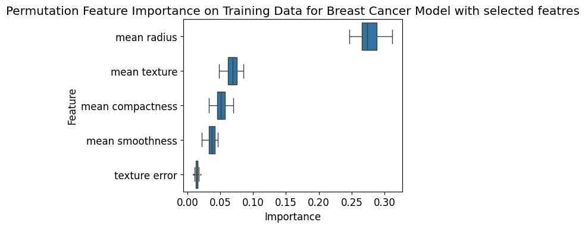

Permutation Feature Importance (PFI) is a:
Permutation Feature Importance was introduced in 2001 by Breiman et al. for Random Forest models and extended to a model-agnostic version in 2018 by Fischer et al.
Permutation Feature Importance is applied as follows:
Build a model, with features that are independent, to predict outputs and computes a performance measure for the dataset.
Loop over each feature (potentially repeated multiple times):
Permute the features value across the dataset, essentially messing up any connection between the label and this feature.
Predict outputs and compute the performance measure based on the dataset with the permuted feature.
Compare the performance measure with the baseline performance.
Use the difference between baseline performance and permuted performance as an indicator of the importance of the feature.
If both performances are similar, the permuted feature did not lead to a decrease in model performance, indicating that the model did not rely heavily on the feature, hence assigning low importance. On the other hand, if the performance of the data with the permuted feature is much worse than the baseline performance, this shows that the model highly depended on the feature to produce good scores.
Add level 2 heading "Permutation Feature Importance (PFI)" and insert code
1 2 | |
Next we load the model built using all of the features
1 2 3 4 5 | |
Verify (again, because we are paranoid) that the model is performing well:
1 2 | |
If all is good and we are getting 100% and 95%, then our model performs well on the training set and also generalizes well to the independent test set.
This is a big deal since we are going to use this model to do our explainability analysis, so if the model is not performing well, then the explainability analysis will not be very useful.
Now, let's use Permutation Feature Importance to get insights into the Random Forest Classification model we loaded above. We can use the scikit-learn implementation called permutation_importance to get the importance values for the features in our model. For measuring the performance drop when permuting a feature, we use the standard metric of our trained model, which is, in our case, the accuracy score. Using the same score enables us to evaluate the performance drop in relation to the baseline performance. We do 40 repetitions of permutation for each feature to get more reliable results:
1 2 3 4 5 6 7 8 9 10 11 12 | |
We now plot bar histograms to visualize the importance of each feature, computed as the mean across the 40 permutation repetitions.
1 2 | |
So now, let's interpret the results:
worst_concave_points feature seems to have the highest impact on the model performance. Permuting this feature leads to a decrease in accuracy of ~0.7%. When comparing it to the baseline accuracy of 100%, we notice that permuting the worst_concave_points feature has almost no effect on the model accuracy. Q What has gone wrong?
A Permutation feature importance assumes feature independence. High correlation among features breaks this assumption and hence, can have an impact on the feature importance analysis.
So let's check our second model where we insured that features are independent
model_rf_selection and generate the permutation feature importance explanation for this model, and resulting plot using plot_permutation_feature_importance. you should get the following
The plots above show how much influence feature correlation has on the permutation feature importances. For the model trained on the selected feature set, the most important feature leads to a mean decrease in accuracy of ~30%, which is in concordance with the observed model accuracy. In addition, the feature importance has a much higher stability as the variance of the feature importances across different permutations is much smaller. This illustrates why you have to be careful when using Permutation Feature Importance for models that were trained on datasets with high feature correlations!
We are not restricted to obtaining feature importances of the same data set we used to train the model. Instead, we could use the same approach to identify the most important features in the test set.
1 2 3 4 5 6 7 8 9 10 11 12 13 | |
It seems that for both datasets, largely the same features are identified as important, which is reassuring.
Note: this agreement of important features between training and testing datasets is not guaranteed. In such cases, it is not straightforward to decide on the "truly important" features for the model. A disagreement can be caused by high correlations in the dataset or even be an indicator that the model is not generaliseable.